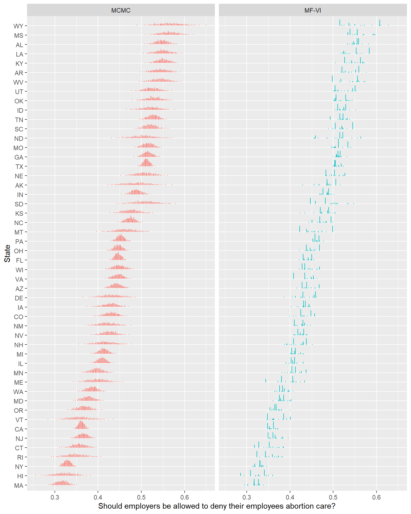
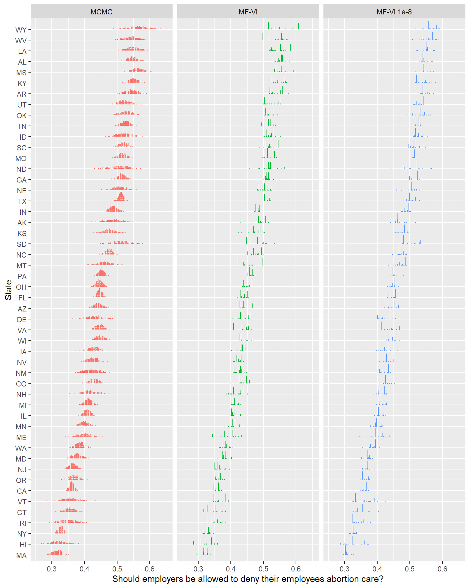
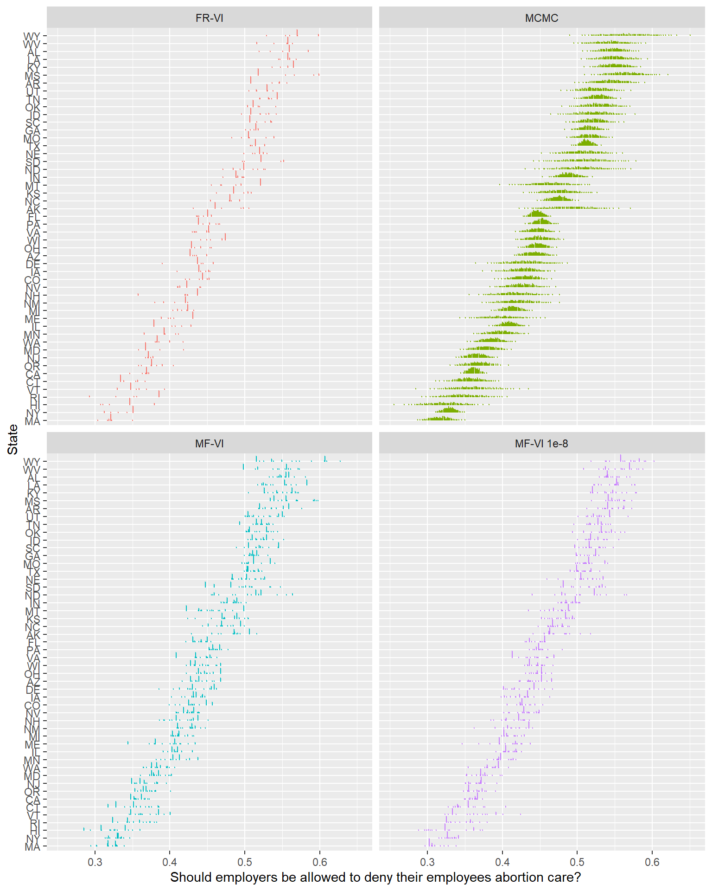

meanfield_60k <- readRDS("fit_60k_meanfield.rds")
mcmc_60k <- readRDS("fit_60k_mcmc.rds")
# Meanfield
epred_mat_mf <- posterior_epred(meanfield_60k, newdata = poststrat_df_60k, draws = 1000)
mrp_estimates_vector_mf <- epred_mat_mf %*% poststrat_df_60k$n /
sum(poststrat_df_60k$n)
mrp_estimate_mf <- c(mean = mean(mrp_estimates_vector_mf),
sd = sd(mrp_estimates_vector_mf))
# MCMC
epred_mat_mcmc <- posterior_epred(mcmc_60k, newdata = poststrat_df_60k, draws = 1000)
mrp_estimates_vector_mcmc <- epred_mat_mcmc %*% poststrat_df_60k$n /
sum(poststrat_df_60k$n)
mrp_estimate_mcmc <- c(mean = mean(mrp_estimates_vector_mcmc),
sd = sd(mrp_estimates_vector_mcmc))
cat("Meanfield MRP estimate mean, sd: ", round(mrp_estimate_mf, 3))
cat("MCMC MRP estimate mean, sd: ", round(mrp_estimate_mcmc, 3))This is the second post in my series on using Variational Inference to speed up relatively complex Bayesian models like Multilevel Regression and Poststratification without the approximation being of disastrously poor quality.
In the last post, I laid out why such reformulating the Bayesian inference problem as optimization might be desirable, but previewed why this might be quite hard to find high quality approximations amenable to optimization. I then introduced our running example (predicting national/sub-national opinion on an abortion question from the CCES using MRP), and gave an initial introduction to a version of Variational Inference where we maximize the Evidence Lower Bound (ELBO) as an objective, and do so using a mean-field Gaussian approximation. We saw that with 60k examples, this took about 8 hours to fit with MCMC, but 144 seconds (!) with VI.
In this post, we’ll explore the shortcomings of this initial approximation, and take a first pass at trying to better with a more complex (full rank) variational approximation. The goal is to get a better feel for what failing models could look like, at least in this relatively simple case.
The rough plan for the series is as follows:
- Introducing the Problem- Why is VI useful, why VI can produce spherical cows
- (This post) How far does iteration on classic VI algorithms like mean-field and full-rank get us?
- Some theory on why posterior approximation with VI can be so poor
- Seeing if some more sophisticated techniques like normalizing flows help
The disclaimer
One sort of obvious objections to how I’ve set up this series is “Why not talk about theory on why VI approximations can be poor before trying stuff?”. While in practice I did read a lot of the papers for the next post before writing this one, I think there’s a lot of value is looking at failed solutions to a problem to build up intuition about what our failure mode looks like, and what it might require to get it right.
Toplines
| Mean | SD | |
|---|---|---|
| MCMC | 43.9% | .2% |
| mean-field VI | 43.7% | .2% |
Starting with basics, the toplines are pretty much identical, which is a good start. The minor difference here could easily reverse on a different seed- from a few quick re-runs these often end up having matching means to 3 decimals.
State Level Estimates
What happens if we produce state level estimates, similar to the plot last post comparing MRP to a simple weighted estimate? Note that I’ll steer away from the MRP Case Study example here in a few ways. I’ll use tidybayes for working with the draws (more elegant than their loop based approach), and I’ll use more draws (helps with simulation error in smaller states).
mcmc_state_level <- poststrat_df_60k %>% add_epred_draws(mcmc_60k, ndraws = 1000)
mfvi_state_level <- poststrat_df_60k %>% add_epred_draws(meanfield_60k, ndraws = 1000)
mcmc_state_level %>% glimpse()Rows: 12,000,000
Columns: 13
Groups: state, eth, male, age, educ, n, repvote, region, .row [12,000]
$ state <chr> "AL", "AL", "AL", "AL", "AL", "AL", "AL", "AL", "AL", "AL",…
$ eth <chr> "White", "White", "White", "White", "White", "White", "Whit…
$ male <dbl> -0.5, -0.5, -0.5, -0.5, -0.5, -0.5, -0.5, -0.5, -0.5, -0.5,…
$ age <chr> "18-29", "18-29", "18-29", "18-29", "18-29", "18-29", "18-2…
$ educ <chr> "No HS", "No HS", "No HS", "No HS", "No HS", "No HS", "No H…
$ n <dbl> 23948, 23948, 23948, 23948, 23948, 23948, 23948, 23948, 239…
$ repvote <dbl> 0.6437414, 0.6437414, 0.6437414, 0.6437414, 0.6437414, 0.64…
$ region <chr> "South", "South", "South", "South", "South", "South", "Sout…
$ .row <int> 1, 1, 1, 1, 1, 1, 1, 1, 1, 1, 1, 1, 1, 1, 1, 1, 1, 1, 1, 1,…
$ .chain <int> NA, NA, NA, NA, NA, NA, NA, NA, NA, NA, NA, NA, NA, NA, NA,…
$ .iteration <int> NA, NA, NA, NA, NA, NA, NA, NA, NA, NA, NA, NA, NA, NA, NA,…
$ .draw <int> 1, 2, 3, 4, 5, 6, 7, 8, 9, 10, 11, 12, 13, 14, 15, 16, 17, …
$ .epred <dbl> 0.5771322, 0.5189677, 0.5483006, 0.5421404, 0.5417602, 0.55…If you haven’t worked with tidybayes before, the glimpse above should help give some intuition about the new shape of the data- we’ve take the 12,000 row poststrat_df_60k, and added a row per observation per draw, with the prediction (.epred) and related metadata. This gives 12,000 x 1,000 = 12 million rows. This really isn’t the most space efficient storage, but it allows for very elegant dplyr style manipulation of results and quick exploration.
Let’s now plot and compare the 50 and 95% credible intervals by state between the two models.
mcmc_state_summary <- mcmc_state_level %>%
# multiply each draw by it's cell's proportion of state N
# this is the P in MRP
group_by(state,.draw) %>%
mutate(postrat_draw = sum(.epred*(n/sum(n)))) %>%
group_by(state) %>%
median_qi(postrat_draw, .width = c(.5,.95)) %>%
mutate(model = "MCMC")
mfvi_state_summary <- mfvi_state_level %>%
group_by(state,.draw) %>%
mutate(postrat_draw = sum(.epred*(n/sum(n)))) %>%
group_by(state) %>%
median_qi(postrat_draw, .width = c(.5,.95)) %>%
mutate(model = "MF-VI")
combined_summary <- bind_rows(mcmc_state_summary,mfvi_state_summary)
combined_summary %>%
mutate(ordered_state = fct_reorder(combined_summary$state,
combined_summary$postrat_draw)) %>%
ggplot(aes(y = ordered_state,
x = postrat_draw,
xmin = .lower,
xmax = .upper,
color = model)) +
geom_pointinterval(position = position_dodge(1)) +
xlim(.25,.75) +
theme(legend.position="top") +
xlab("Should employers be allowed to deny their employees abortion care?") +
ylab("State")
… That looks concerning.
What might you get wrong if you used the VI approximation for inference here? If you only cared about the median estimate primarily, you might be ok with this effort. If you care about uncertainty though, here’s a non-exhaustive list of concerns here:
- Probably unimodal, smooth posterior distributions from MCMC have gone off-course to the point where the Median/50/95% presentation no longer seems up to expressing the posterior shape (more on this in a second).
- The MF-VI posteriors are often narrower in 50% or 95% CI- we’d on average underestimate various types of uncertainty here.
- Worse1, the MF-VI posterior’s CIs aren’t consistently narrower, either in the sense they are always narrower, or that they tend to consistently distort the same way. Sometimes both the 50% and 95% are just a small amount narrower than MCMC- the Michigan posterior attempt looks passable. Sometimes things are worse, with 50% MFVI CIs almost as wide as the MCMC 95% interval- Wyoming shows such a distortion. Sometimes the probability mass between 50% and 95% is confined to such a minuscule range it looks like I forgot to plot it.
That last point is particularly important because it suggests there’s no easy rule of thumb for mechanically correcting these intervals, or deciding which could be plausible approximations without the MCMC plot alongside to guide that process. We can’t use VI to save a ton of time, infer the intervals consistently need to x% be wider, and call it a day- we need to reckon more precisely with why they’re distorted.
Let’s return now to the point about how the shape has gone wrong. Below is a dot plot (Kay et al., 2016)- each point here represents about 1% of the probability mass. I enjoy this approach to posterior visualization when things are getting weird, as this clarifies a lot about the full shape of the posterior distribution, making fewer smoothing assumptions like a density or eye plot might.
mcmc_state_points <- mcmc_state_level %>%
# multiply each draw by it's cell's proportion of state N
# this is the P in MRP
group_by(state,.draw) %>%
summarize(postrat_draw = sum(.epred*(n/sum(n)))) %>%
mutate(model = "MCMC")
mfvi_state_points <- mfvi_state_level %>%
group_by(state,.draw) %>%
summarize(postrat_draw = sum(.epred*(n/sum(n)))) %>%
mutate(model = "MF-VI")
combined_points <- mcmc_state_points %>%
bind_rows(mfvi_state_points) %>%
ungroup()
combined_points %>%
mutate(ordered_state = fct_reorder(combined_points$state,
combined_points$postrat_draw)) %>%
ggplot(aes(y = ordered_state,
x = postrat_draw,
color = model)) +
stat_dots(quantiles = 100) +
facet_wrap(~model) +
theme(legend.position="none") +
xlab("Should employers be allowed to deny their employees abortion care?") +
ylab("State")
Eek. The closer to the individual draws we get, the less these two models seem to be producing comparable estimates. This isn’t me expressing an aesthetic preference for smooth, unimodal distributions- the MFVI plots in this view imply beliefs like “support for this policy in Wyoming is overwhelmingly likely to fall in 1 of 3 narrow ranges, all other values are unlikely”2. Other similar humorous claims are easy to find.
Stepping back for a second, if our use-case for this model takes pretty much any form of interest in quantifying uncertainty accurately, this is not an acceptable approximation. I could poke more holes, but I can more profitably do that after I’ve explored some theory of why VI models struggle, and brought in some more sophisticated diagnostic tools than looking with our eyeballs3; so let’s hold off on that.
Do more basic fixes solve anything?
So I’ve been billing this simple mean-field model as a first pass- I fit it on more or less default rstanarm parameters. I think it’s worth taking a moment to show that getting this approximation problem right isn’t going to be solved with low hanging fruit ideas, since that will motivate our need for better diagnostics and more expressive approximations.
Lowering the tolerance
So we managed to structure our Bayesian inference problem as an optimization problem. Can’t we just optimize better? Maybe with more training the result will be less bad?
the tol_rel_obj parameter control’s the convergence tolerance on the relative norm of the objective. In other words, it controls what (change in the) Evidence Lower Bound value we consider accurate enough to stop at. The default is 0.01, which feels a bit opaque, but let’s try setting it way down to 1e-8 (1Mx lower). Then we can plot it alongside the MCMC estimates and original MF-VI attempt.
tic()
fit_60k_1e8 <- stan_glmer(abortion ~ (1 | state) + (1 | eth) + (1 | educ) +
male + (1 | male:eth) + (1 | educ:age) +
(1 | educ:eth) + repvote + factor(region),
family = binomial(link = "logit"),
data = cces_all_df,
prior = normal(0, 1, autoscale = TRUE),
prior_covariance = decov(scale = 0.50),
adapt_delta = 0.99,
# Printing the ELBO every 1k draws
refresh = 1000,
tol_rel_obj = 1e-8,
algorithm = "meanfield",
seed = 605)Chain 1: ------------------------------------------------------------
Chain 1: EXPERIMENTAL ALGORITHM:
Chain 1: This procedure has not been thoroughly tested and may be unstable
Chain 1: or buggy. The interface is subject to change.
Chain 1: ------------------------------------------------------------
Chain 1:
Chain 1:
Chain 1:
Chain 1: Gradient evaluation took 0.032 seconds
Chain 1: 1000 transitions using 10 leapfrog steps per transition would take 320 seconds.
Chain 1: Adjust your expectations accordingly!
Chain 1:
Chain 1:
Chain 1: Begin eta adaptation.
Chain 1: Iteration: 1 / 250 [ 0%] (Adaptation)
Chain 1: Iteration: 50 / 250 [ 20%] (Adaptation)
Chain 1: Iteration: 100 / 250 [ 40%] (Adaptation)
Chain 1: Iteration: 150 / 250 [ 60%] (Adaptation)
Chain 1: Iteration: 200 / 250 [ 80%] (Adaptation)
Chain 1: Success! Found best value [eta = 1] earlier than expected.
Chain 1:
Chain 1: Begin stochastic gradient ascent.
Chain 1: iter ELBO delta_ELBO_mean delta_ELBO_med notes
Chain 1: 100 -40291.889 1.000 1.000
Chain 1: 200 -39947.669 0.504 1.000
Chain 1: 300 -39802.182 0.337 0.009
Chain 1: 400 -39776.283 0.253 0.009
Chain 1: 500 -39733.863 0.203 0.004
Chain 1: 600 -39733.198 0.169 0.004
Chain 1: 700 -39728.255 0.145 0.001
Chain 1: 800 -39784.557 0.127 0.001
Chain 1: 900 -39724.366 0.113 0.001
Chain 1: 1000 -39732.042 0.102 0.001
Chain 1: 1100 -39731.525 0.002 0.001
Chain 1: 1200 -39732.049 0.001 0.001
Chain 1: 1300 -39728.119 0.001 0.000
Chain 1: 1400 -39740.928 0.000 0.000
Chain 1: 1500 -39726.114 0.000 0.000
Chain 1: 1600 -39734.740 0.000 0.000
Chain 1: 1700 -39734.129 0.000 0.000
Chain 1: 1800 -39740.719 0.000 0.000
Chain 1: 1900 -39743.591 0.000 0.000
Chain 1: 2000 -39737.155 0.000 0.000
Chain 1: 2100 -39720.432 0.000 0.000
Chain 1: 2200 -39738.138 0.000 0.000
Chain 1: 2300 -39731.045 0.000 0.000
Chain 1: 2400 -39716.393 0.000 0.000
Chain 1: 2500 -39729.189 0.000 0.000
Chain 1: 2600 -39722.239 0.000 0.000
Chain 1: 2700 -39719.508 0.000 0.000
Chain 1: 2800 -39718.709 0.000 0.000
Chain 1: 2900 -39735.110 0.000 0.000
Chain 1: 3000 -39725.900 0.000 0.000
Chain 1: 3100 -39726.123 0.000 0.000
Chain 1: 3200 -39718.736 0.000 0.000
Chain 1: 3300 -39718.141 0.000 0.000
Chain 1: 3400 -39717.147 0.000 0.000
Chain 1: 3500 -39725.738 0.000 0.000
Chain 1: 3600 -39732.190 0.000 0.000
Chain 1: 3700 -39723.666 0.000 0.000
Chain 1: 3800 -39725.470 0.000 0.000
Chain 1: 3900 -39741.504 0.000 0.000
Chain 1: 4000 -39722.951 0.000 0.000
Chain 1: 4100 -39721.852 0.000 0.000
Chain 1: 4200 -39717.894 0.000 0.000
Chain 1: 4300 -39717.474 0.000 0.000
Chain 1: 4400 -39716.244 0.000 0.000
Chain 1: 4500 -39727.542 0.000 0.000
Chain 1: 4600 -39716.670 0.000 0.000
Chain 1: 4700 -39723.714 0.000 0.000
Chain 1: 4800 -39727.123 0.000 0.000
Chain 1: 4900 -39722.517 0.000 0.000
Chain 1: 5000 -39722.485 0.000 0.000
Chain 1: 5100 -39719.107 0.000 0.000
Chain 1: 5200 -39722.873 0.000 0.000
Chain 1: 5300 -39720.153 0.000 0.000
Chain 1: 5400 -39718.807 0.000 0.000
Chain 1: 5500 -39719.687 0.000 0.000
Chain 1: 5600 -39730.850 0.000 0.000
Chain 1: 5700 -39719.315 0.000 0.000
Chain 1: 5800 -39717.985 0.000 0.000
Chain 1: 5900 -39715.943 0.000 0.000
Chain 1: 6000 -39721.574 0.000 0.000
Chain 1: 6100 -39716.072 0.000 0.000
Chain 1: 6200 -39715.947 0.000 0.000
Chain 1: 6300 -39716.325 0.000 0.000
Chain 1: 6400 -39716.206 0.000 0.000
Chain 1: 6500 -39720.508 0.000 0.000
Chain 1: 6600 -39717.566 0.000 0.000
Chain 1: 6700 -39718.903 0.000 0.000
Chain 1: 6800 -39716.766 0.000 0.000
Chain 1: 6900 -39724.482 0.000 0.000
Chain 1: 7000 -39717.376 0.000 0.000
Chain 1: 7100 -39721.566 0.000 0.000
Chain 1: 7200 -39725.641 0.000 0.000
Chain 1: 7300 -39717.909 0.000 0.000
Chain 1: 7400 -39720.096 0.000 0.000
Chain 1: 7500 -39716.243 0.000 0.000
Chain 1: 7600 -39738.451 0.000 0.000
Chain 1: 7700 -39715.841 0.000 0.000
Chain 1: 7800 -39716.561 0.000 0.000
Chain 1: 7900 -39716.865 0.000 0.000
Chain 1: 8000 -39721.972 0.000 0.000
Chain 1: 8100 -39723.864 0.000 0.000
Chain 1: 8200 -39716.157 0.000 0.000
Chain 1: 8300 -39720.235 0.000 0.000
Chain 1: 8400 -39718.693 0.000 0.000
Chain 1: 8500 -39727.325 0.000 0.000
Chain 1: 8600 -39716.809 0.000 0.000
Chain 1: 8700 -39716.760 0.000 0.000
Chain 1: 8800 -39721.577 0.000 0.000
Chain 1: 8900 -39716.910 0.000 0.000
Chain 1: 9000 -39721.631 0.000 0.000
Chain 1: 9100 -39721.102 0.000 0.000
Chain 1: 9200 -39718.303 0.000 0.000
Chain 1: 9300 -39715.759 0.000 0.000
Chain 1: 9400 -39719.769 0.000 0.000
Chain 1: 9500 -39719.046 0.000 0.000
Chain 1: 9600 -39720.854 0.000 0.000
Chain 1: 9700 -39717.968 0.000 0.000
Chain 1: 9800 -39721.396 0.000 0.000
Chain 1: 9900 -39728.139 0.000 0.000
Chain 1: 10000 -39715.367 0.000 0.000
Chain 1: Informational Message: The maximum number of iterations is reached! The algorithm may not have converged.
Chain 1: This variational approximation is not guaranteed to be meaningful.
Chain 1:
Chain 1: Drawing a sample of size 1000 from the approximate posterior...
Chain 1: COMPLETED.Warning: Pareto k diagnostic value is 2.05. Resampling is disabled. Decreasing
tol_rel_obj may help if variational algorithm has terminated prematurely.
Otherwise consider using sampling instead.Setting 'QR' to TRUE can often be helpful when using one of the variational inference algorithms. See the documentation for the 'QR' argument.toc()298.73 sec elapsedlower_tol_draws <- poststrat_df_60k %>% add_epred_draws(fit_60k_1e8, ndraws = 1000)
mfvi_lower_tol_points <- lower_tol_draws %>%
group_by(state,.draw) %>%
summarize(postrat_draw = sum(.epred*(n/sum(n)))) %>%
mutate(model = "MF-VI 1e-8")
combined_points_w_lower_tol <- combined_points %>%
bind_rows(mfvi_lower_tol_points) %>%
ungroup()
combined_points_w_lower_tol %>%
mutate(ordered_state = fct_reorder(combined_points_w_lower_tol$state,
combined_points_w_lower_tol$postrat_draw)) %>%
ggplot(aes(y = ordered_state,
x = postrat_draw,
color = model)) +
stat_dots(quantiles = 100) +
facet_wrap(~model) +
theme(legend.position="none") +
xlab("Should employers be allowed to deny their employees abortion care?") +
ylab("State")
… That certainly looks different, but I don’t really think I’d say it looks meaningfully better4.
Looking at the printed out ELBO, it’s pretty clear that there was no traction after the first ~1000 samples. A variational family this simple isn’t going to get much better, no matter how much time you give it.
Full-Rank Approximation
So if extend training time, but improvements don’t result, maybe the next option is ask whether we need something more sophisticated than a mean-field approximation. Instead of
q(z) = \prod_{j=1}^{m} q_j(z_j)
let’s now try the full-rank approximation. Gather than each z_j getting it’s own independent Gaussian, this uses a single multivariate normal distribution- so we can now (roughly) learn correlation structure, fancy.
q(z) = \mathcal{N}(z|\mu,\Sigma)
tic()
fit_60k_fullrank <- stan_glmer(abortion ~ (1 | state) + (1 | eth) + (1 | educ) +
male + (1 | male:eth) + (1 | educ:age) +
(1 | educ:eth) + repvote + factor(region),
family = binomial(link = "logit"),
data = cces_all_df,
prior = normal(0, 1, autoscale = TRUE),
prior_covariance = decov(scale = 0.50),
adapt_delta = 0.99,
tol_rel_obj = 1e-8,
# Printing the ELBO every 1k draws
refresh = 1000,
algorithm = "fullrank",
QR = TRUE,
seed = 605)Chain 1: ------------------------------------------------------------
Chain 1: EXPERIMENTAL ALGORITHM:
Chain 1: This procedure has not been thoroughly tested and may be unstable
Chain 1: or buggy. The interface is subject to change.
Chain 1: ------------------------------------------------------------
Chain 1:
Chain 1:
Chain 1:
Chain 1: Gradient evaluation took 0.025 seconds
Chain 1: 1000 transitions using 10 leapfrog steps per transition would take 250 seconds.
Chain 1: Adjust your expectations accordingly!
Chain 1:
Chain 1:
Chain 1: Begin eta adaptation.
Chain 1: Iteration: 1 / 250 [ 0%] (Adaptation)
Chain 1: Iteration: 50 / 250 [ 20%] (Adaptation)
Chain 1: Iteration: 100 / 250 [ 40%] (Adaptation)
Chain 1: Iteration: 150 / 250 [ 60%] (Adaptation)
Chain 1: Iteration: 200 / 250 [ 80%] (Adaptation)
Chain 1: Iteration: 250 / 250 [100%] (Adaptation)
Chain 1: Success! Found best value [eta = 0.1].
Chain 1:
Chain 1: Begin stochastic gradient ascent.
Chain 1: iter ELBO delta_ELBO_mean delta_ELBO_med notes
Chain 1: 100 -248586.032 1.000 1.000
Chain 1: 200 -180460.369 0.689 1.000
Chain 1: 300 -121675.221 0.620 0.483
Chain 1: 400 -87431.017 0.563 0.483
Chain 1: 500 -120999.829 0.506 0.392
Chain 1: 600 -96768.296 0.463 0.392
Chain 1: 700 -93851.607 0.402 0.378
Chain 1: 800 -92494.273 0.353 0.378
Chain 1: 900 -74378.556 0.341 0.277
Chain 1: 1000 -77681.560 0.311 0.277
Chain 1: 1100 -77465.866 0.211 0.250
Chain 1: 1200 -68692.287 0.186 0.244
Chain 1: 1300 -75140.633 0.147 0.128
Chain 1: 1400 -49430.772 0.160 0.128
Chain 1: 1500 -59011.994 0.148 0.128
Chain 1: 1600 -57033.572 0.127 0.086
Chain 1: 1700 -56133.855 0.125 0.086
Chain 1: 1800 -46605.149 0.144 0.128
Chain 1: 1900 -47895.964 0.122 0.086
Chain 1: 2000 -44745.890 0.125 0.086
Chain 1: 2100 -43472.467 0.128 0.086
Chain 1: 2200 -43454.384 0.115 0.070
Chain 1: 2300 -41781.249 0.110 0.040
Chain 1: 2400 -42045.221 0.059 0.035
Chain 1: 2500 -41381.652 0.044 0.029
Chain 1: 2600 -40754.440 0.043 0.027
Chain 1: 2700 -41108.136 0.042 0.027
Chain 1: 2800 -40450.439 0.023 0.016
Chain 1: 2900 -40423.015 0.020 0.016
Chain 1: 3000 -40375.121 0.013 0.015
Chain 1: 3100 -40227.022 0.011 0.009
Chain 1: 3200 -40302.411 0.011 0.009
Chain 1: 3300 -40352.339 0.007 0.006
Chain 1: 3400 -40174.196 0.007 0.004
Chain 1: 3500 -40089.973 0.006 0.004
Chain 1: 3600 -40143.009 0.004 0.002
Chain 1: 3700 -40123.486 0.003 0.002
Chain 1: 3800 -40044.004 0.002 0.002
Chain 1: 3900 -39955.515 0.002 0.002
Chain 1: 4000 -40003.851 0.002 0.002
Chain 1: 4100 -39948.544 0.002 0.002
Chain 1: 4200 -40028.027 0.002 0.002
Chain 1: 4300 -39907.006 0.002 0.002
Chain 1: 4400 -39868.266 0.002 0.002
Chain 1: 4500 -39938.386 0.002 0.002
Chain 1: 4600 -39837.339 0.002 0.002
Chain 1: 4700 -39852.349 0.002 0.002
Chain 1: 4800 -39823.670 0.002 0.002
Chain 1: 4900 -39809.797 0.001 0.001
Chain 1: 5000 -39807.261 0.001 0.001
Chain 1: 5100 -39806.402 0.001 0.001
Chain 1: 5200 -39818.805 0.001 0.001
Chain 1: 5300 -39797.428 0.001 0.001
Chain 1: 5400 -39790.469 0.001 0.000
Chain 1: 5500 -39785.797 0.001 0.000
Chain 1: 5600 -39779.121 0.000 0.000
Chain 1: 5700 -39780.314 0.000 0.000
Chain 1: 5800 -39771.363 0.000 0.000
Chain 1: 5900 -39770.673 0.000 0.000
Chain 1: 6000 -39764.096 0.000 0.000
Chain 1: 6100 -39764.173 0.000 0.000
Chain 1: 6200 -39765.651 0.000 0.000
Chain 1: 6300 -39756.809 0.000 0.000
Chain 1: 6400 -39753.724 0.000 0.000
Chain 1: 6500 -39754.753 0.000 0.000
Chain 1: 6600 -39750.392 0.000 0.000
Chain 1: 6700 -39753.067 0.000 0.000
Chain 1: 6800 -39750.341 0.000 0.000
Chain 1: 6900 -39745.696 0.000 0.000
Chain 1: 7000 -39743.521 0.000 0.000
Chain 1: 7100 -39739.157 0.000 0.000
Chain 1: 7200 -39736.689 0.000 0.000
Chain 1: 7300 -39743.472 0.000 0.000
Chain 1: 7400 -39738.431 0.000 0.000
Chain 1: 7500 -39740.789 0.000 0.000
Chain 1: 7600 -39735.842 0.000 0.000
Chain 1: 7700 -39733.493 0.000 0.000
Chain 1: 7800 -39735.015 0.000 0.000
Chain 1: 7900 -39736.429 0.000 0.000
Chain 1: 8000 -39733.548 0.000 0.000
Chain 1: 8100 -39732.722 0.000 0.000
Chain 1: 8200 -39734.720 0.000 0.000
Chain 1: 8300 -39732.932 0.000 0.000
Chain 1: 8400 -39727.658 0.000 0.000
Chain 1: 8500 -39734.522 0.000 0.000
Chain 1: 8600 -39728.602 0.000 0.000
Chain 1: 8700 -39724.690 0.000 0.000
Chain 1: 8800 -39725.374 0.000 0.000
Chain 1: 8900 -39731.450 0.000 0.000
Chain 1: 9000 -39725.866 0.000 0.000
Chain 1: 9100 -39728.639 0.000 0.000
Chain 1: 9200 -39730.156 0.000 0.000
Chain 1: 9300 -39729.036 0.000 0.000
Chain 1: 9400 -39725.536 0.000 0.000
Chain 1: 9500 -39727.031 0.000 0.000
Chain 1: 9600 -39725.389 0.000 0.000
Chain 1: 9700 -39727.947 0.000 0.000
Chain 1: 9800 -39723.932 0.000 0.000
Chain 1: 9900 -39723.173 0.000 0.000
Chain 1: 10000 -39723.944 0.000 0.000
Chain 1: Informational Message: The maximum number of iterations is reached! The algorithm may not have converged.
Chain 1: This variational approximation is not guaranteed to be meaningful.
Chain 1:
Chain 1: Drawing a sample of size 1000 from the approximate posterior...
Chain 1: COMPLETED.Warning: Pareto k diagnostic value is 2.95. Resampling is disabled. Decreasing
tol_rel_obj may help if variational algorithm has terminated prematurely.
Otherwise consider using sampling instead.toc()350.16 sec elapsedfull_rank_draws <- poststrat_df_60k %>% add_epred_draws(fit_60k_fullrank,
ndraws = 1000)
frvi_points <- full_rank_draws %>%
group_by(state,.draw) %>%
summarize(postrat_draw = sum(.epred*(n/sum(n)))) %>%
mutate(model = "FR-VI")
combined_points_w_frvi <- combined_points_w_lower_tol %>%
bind_rows(frvi_points) %>%
ungroup()
combined_points_w_frvi %>%
mutate(ordered_state = fct_reorder(combined_points_w_frvi$state,
combined_points_w_frvi$postrat_draw)) %>%
ggplot(aes(y = ordered_state,
x = postrat_draw,
color = model)) +
stat_dots(quantiles = 100) +
facet_wrap(~model) +
theme(legend.position="none") +
xlab("Should employers be allowed to deny their employees abortion care?") +
ylab("State")
The first thing to note here is that unlike the mean-field approximation, fitting this model required some tinkering to get it to fit. I ended up needing to set QR = TRUE (ie, use a QR decomposition) to get this to fit at all (unless I set the initialization to 0, at which point the posterior collapsed to nearly a single point).
Unfortunately, this version has a similar spiky posterior distribution. In terms of uncertainty, it’s clearly worse than the mean-field implementation. The ELBO starts from higher, spends some time actually improving, but also quickly reaches a plateau. It doesn’t seem like this is a way out either.
Where to from here? (Why is it like this?)
We’ve seen that simple variational families like the mean-field and full-rank can approximately mirror the central tendencies of MCMC, but things fall apart as we attempt to consider uncertainty, either through simple credible intervals, or especially once we start to visualize the unrealistic, lumpy VI posterior distributions in their entirety.
This isn’t something we can solve with more training time: each of these algorithms had reached the lowest ELBO they could well before we produced final draws. If I had to guess, I think we need a fundamentally more expressive class of variational family to make progress.
While trying to fit models without digging too much into the theory of why VI approximations can be poor has been fun, it’s time to bring in some theory. In the next post, I’ll explore the literature on why the uncertainty behavior of VI can be so dubious. In the following one, I’ll illustrate some better diagnostics as well.
The code for this post can be found here. Thanks for reading.
Footnotes
Really, the worst type of wrong, completely unpredictable wrong. If you spend time staring to try to infer a causal pattern of which states we can’t estimate well, you’re likely just going to end up confused.↩︎
Some of these MFVI distributions are bad enough that you might reasonably wonder if some of the badness is just plotting weirdness. That was my intuition at first. Of course though, this is sufficient granularity to make the MCMC results look reasonable. But even if you zoom in on 1 or two states and add way more points, the improbably sharp spikes remain.↩︎
Phrase due to Richard McElreath. The magic of good visualizations like Kay et al.’s is that makes it trivial to let pattern recognition go to work, and be able to go “oh, that looks wrong”.↩︎
Also, apologies for showing every 100 iterations; the rstanarm parameter to set this,
refreshdoesn’t appear to work properly with non-MCMC models, so I can either not show the ELBO or blow up the post with this.↩︎
Reuse
Citation
BibTeX citation:
@online{timm2022,
author = {Timm, Andy},
title = {Variational {Inference} for {MRP} with {Reliable} {Posterior}
{Distributions}},
date = {2022-11-20},
url = {https://andytimm.github.io/posts/Variational MRP Pt2/Variational_MRP_pt2.html},
langid = {en}
}
For attribution, please cite this work as:
Timm, Andy. 2022. “Variational Inference for MRP with Reliable
Posterior Distributions.” November 20, 2022. https://andytimm.github.io/posts/Variational
MRP Pt2/Variational_MRP_pt2.html.